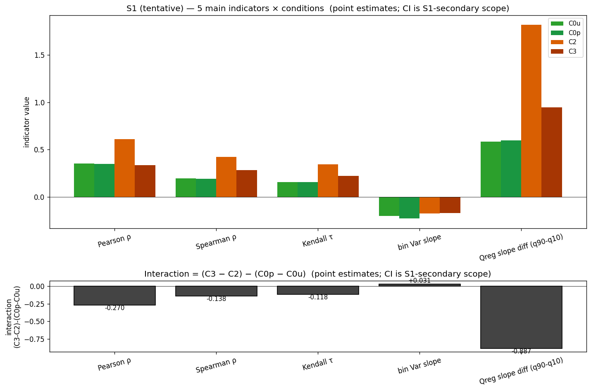
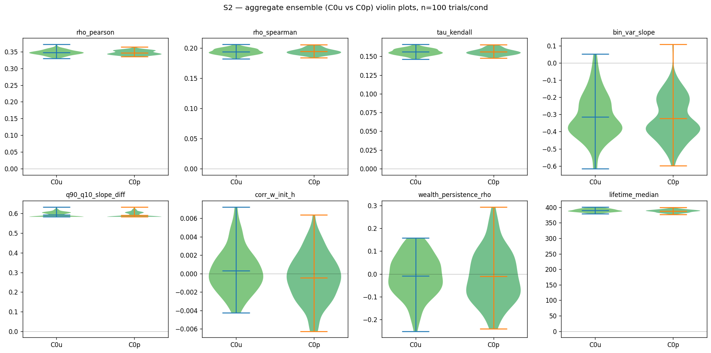
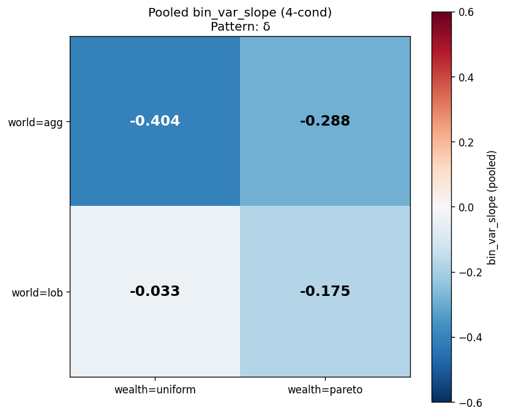
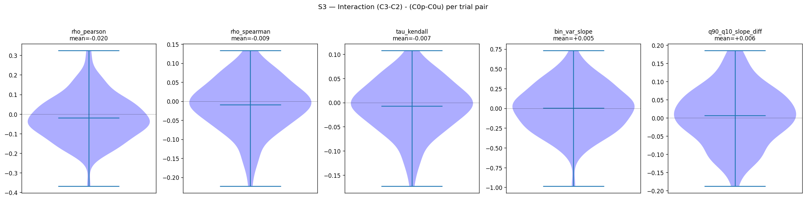
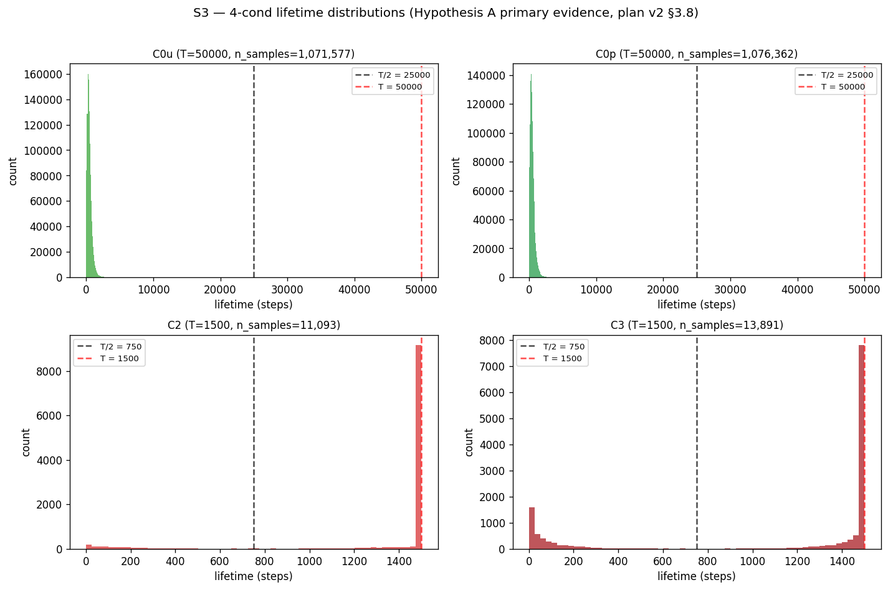
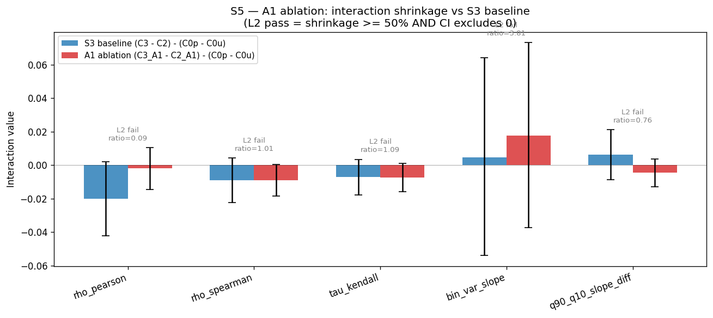
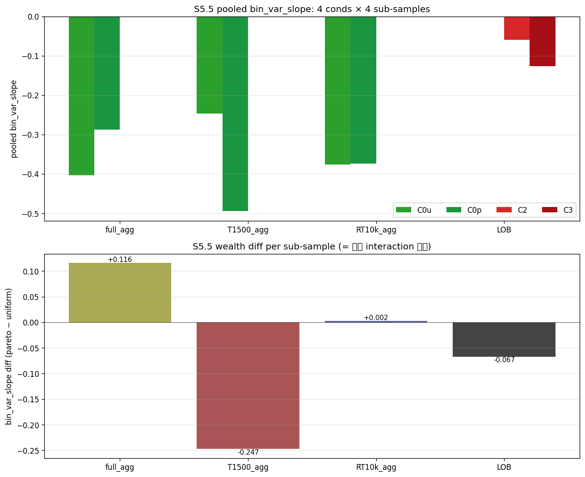
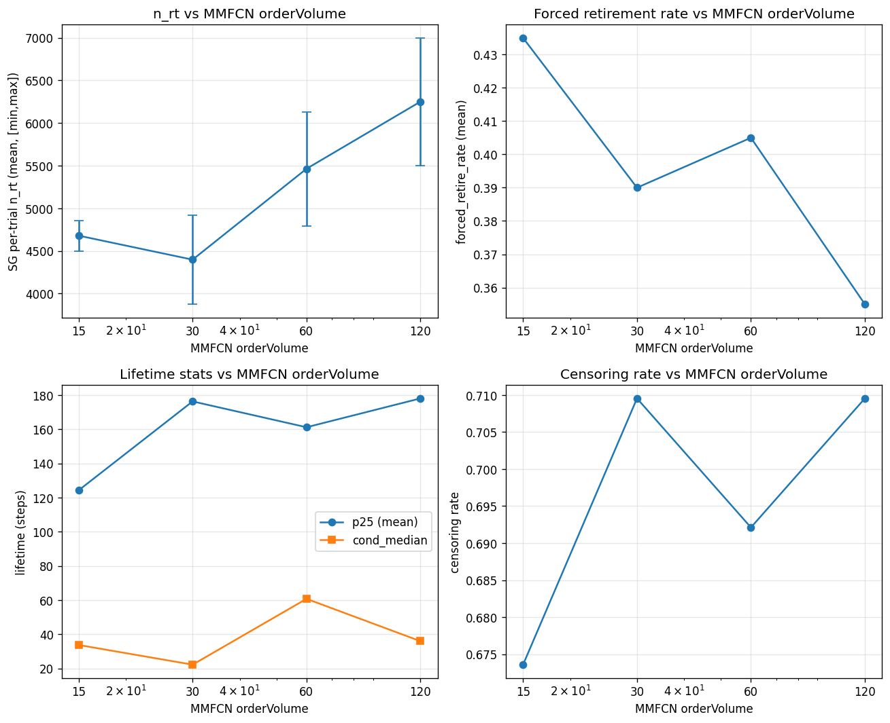

YH006 で見えた「LOB が funnel 構造を弱める」交互作用を、100 trial アンサンブル + bootstrap CI + ablation で機構的に検証した Phase 2。結果ビューア(PAMS + parquet 依存、ブラウザ実行不可)。主結論: 仮説 A 単純版(q heterogeneity → funnel pollution)は反証され、Pareto 条件下では初期 wealth 分布の persistence が dominant という仮説 A revised が浮上。LOB friction が agent turnover を抑制する lifetime persistence は primary evidence 確定。








| metric | C0u | C0p | C2 | C3 |
|---|---|---|---|---|
| rho_pearson | +0.347 | +0.347 | +0.278 | +0.257 |
| bin_var_slope | −0.314 | −0.324 | −0.036 | −0.041 |
| hill_alpha | +2.46 | +2.82 | +3.15 | +2.98 |
| lifetime p25 (主) | 227 | 224 | 1500 | 212 |
| censoring 率 (主) | 0.9% | 0.9% | 90.1% | 72.0% |